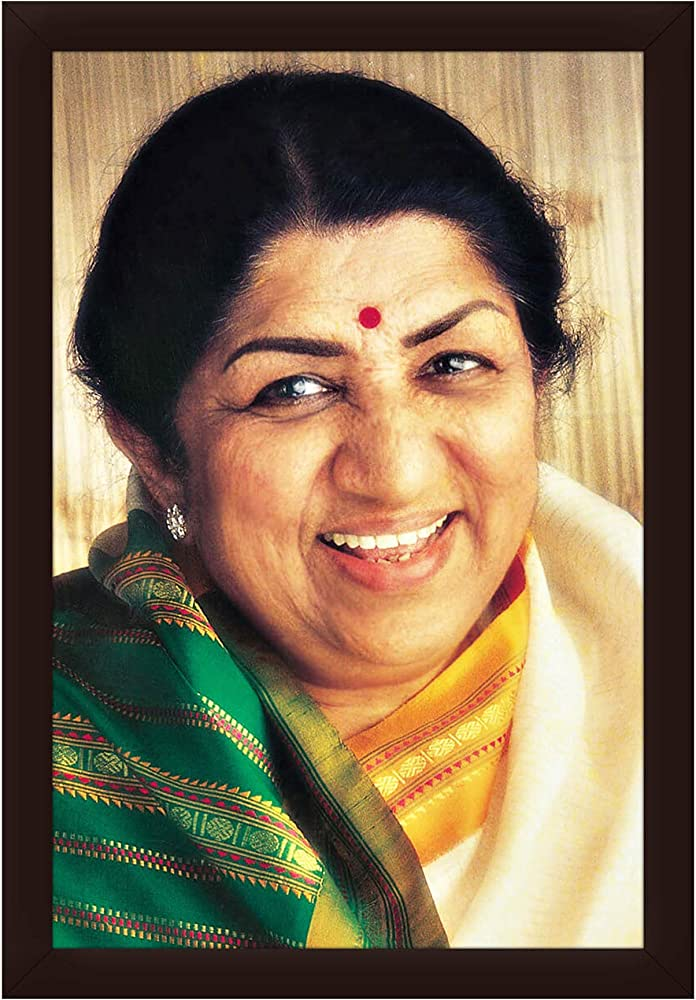

|  | Lata Mangeshkar smiling in the picture☺️! |
ChildhoodAt the age of five, Lata started working as an actress in her father's musical plays. After he died of heart disease when she was 13, Master Vinayak of Navyug Chitrapat movie company took care of the kids. He helped kickstart Lata's career as a singer and an actress.She moved to Mumbai in 1945 and started taking music lessons from Ustad Aman Ali Khan. Lata sang "Paa Lagoon Kar Jori" for Vasant Joglekar's Hindi-language movie ‘Aap Ki Seva Mein’ (1946). The new chapter in Lata's life was full of exciting opportunities and new endeavours, however it was full of challenges too. he singing legend came from a humble background and had to face a lot of struggle in her initial years.. Losing her father at the age of 13 left a deep scar on Lata’s mind, and being the eldest among her siblings, she had to bear financial responsibility early on in life. Her mentor, Vinayak, lost his life in 1948, which came as a big blow to Lata. She was then mentored by music director Ghulam Haider but struggled to find acceptance in the industry, and was often criticized by producers for her Maharashtrian accent. As Urdu had a huge influence on the music industry, Lata was forced to take Urdu lessons as well. Lata's first breakthrough film hit came with the song "Dil Mera Toda, Mujhe Kahin Ka Na Chhora" in the movie Majboor (1948) and the rest, as they say, is history. MoreTo know more about her click here! |